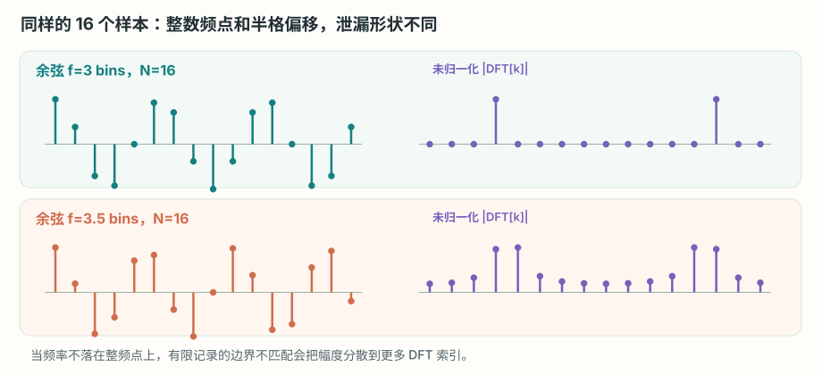
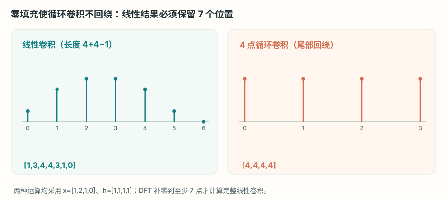

Signal · System · Insight / 07
DFT：频谱泄漏、补零与循环卷积
有限样本的有限个频率值是如何产生的？哪些信息会被窗口改变，哪些只是显示方式改变？
有限数据的频谱里，为什么一个纯正弦会“长出”很多频点？
假设在每秒相同的采样率下只保留 16 个样本。一个恰好在 DFT 第 3 个频率点上的余弦，通常只在第 3 与第 13 个点出现峰；把频率轻微移动到第 3.5 个点，能量就分布到更多 k。这并非计算故障，而是有限观察时间与频率网格之间的相互作用。
DFT 不是另一种声音物理现象。它为 N 个离散样本提供 N 个复数系数，能够无损重建这 N 个样本（若保留全部系数并用一致的归一化）。但这些系数表示的是这个有限窗口中的数据，并不自动确定原本无限长的信号。
先固定一个不会混淆的归一化约定
设长度为 N 的输入 x[0]…x[N−1]，采用正变换不除以 N、逆变换除以 N 的约定。正向 DFT 将 DTFT 在 ω_k=2πk/N 的位置等间隔取样；负指数用于正向变换。
式（1）：k=0,…,N−1；单位为 bin，映射 Hz 还需要 fₛ。
式（2）：此处 n=0,…,N−1。SciPy 的 norm=backward 与本式一致。
如果 x 为实值序列，X[N−k]=conj(X[k])（下标按模 N 解释）。对于偶数 N，k=0 的 DC 与 k=N/2 的 Nyquist 频点是自共轭实值；单边幅值谱常会对中间正频率点作 2/N 缩放，端点不能简单翻倍。
窗函数是怎样把单频率扩散到多频点的？

保留 16 个样本等价于把无限序列与一个长度为 16 的矩形窗相乘。时间相乘会对应频域卷积，窗的频谱主瓣与旁瓣会影响我们观测到的有限样本谱。若频率恰好落在 DFT 网格上，两个频率分量可能集中在对应的整数 k 上；否则会在更多频点出现幅度，形成泄漏。
加 Hann 或 Hamming 窗可以降低某些旁瓣，但也会展宽主瓣，并改变增益和噪声等效带宽。加窗不是“让所有频谱更准确”的万能修复；需要根据是否要估计单频幅度、分离近邻频率或降低强干扰旁瓣选择窗口，并正确补偿相干增益。
频点间距与真正的频率分辨率有什么区别？
N 个样本、采样率 fₛ 的总观测时长为 T=N/fₛ，DFT 频点间距为 Δf=fₛ/N=1/T。这个数字描述的是频域采样网格，不单独决定所有频率估计问题的理论分辨下界。两个近邻正弦能否分辨还取决于窗函数、SNR、相对幅度、算法模型与观察时长。
式（3）：T=N/fₛ 为已有数据的记录时长。此式给出网格间距，不是普适分辨极限。
补零到 M>N 点之后，频点间距变成 fₛ/M，频谱曲线显示得更密；但它是对原来有限记录的 DTFT 在更多位置采样，并没有生成更多真实观测时间。另一方面，FFT 实现也不一定强制 N 必须是 2 的幂。
为什么 FFT 相乘得到的是循环卷积？
DFT 基函数的索引按照 N 周期重复；因此在频域把两个 N 点 DFT 逐点相乘，再做 N 点逆变换，结果对应 N 点循环卷积。线性卷积的尾部如果延伸到 N−1 之外，就会绕回低索引位置，与前部相加。
式（4）：只描述周期为 N 的循环卷积；不是有限长线性卷积的直接定义。

要用 DFT 实现完整的有限线性卷积，两个输入长度分别是 L 和 M 时，在两边都补零至 N≥L+M−1，然后进行 N 点 DFT、频域相乘、逆 DFT；这样不会发生非零尾部的回绕。本例 L=M=4，至少补到 7 点。
看见 3 到 3.5 bins 的泄漏演变
可交互推演：余弦频率，单位 DFT bins
图为确定性计算，不是测量值。无脚本时仍能从上文的公式和静态图理解结论。
固定 N=16，改变余弦频率从 3.0 至 4.0 bins。图中显示全部 16 个 DFT 索引的未归一化幅值。调整滑块时，比较单频两峰和谱能量向其他频点扩散的差异。
def convolution(x,h):
y=[0]*(len(x)+len(h)-1)
for i,a in enumerate(x):
for j,b in enumerate(h):y[i+j]+=a*b
return y
assert convolution([1,2,1,0],[1,1,1,1]) == [1,3,4,4,3,1,0]
# 对长度 7 的零填充序列做 DFT/IDFT，也应得到同一结果完整程序：examples/07_dft.py，运行 python examples/07_dft.py。测试同时给出了数据与误差容差，不依赖外部包。
别把频谱图的显示技巧误当作数据改进
- DFT 的 N 个频点来自有限观察；它可以准确重构有限 N 点数据，不代表唯一决定窗外信号。
- 矩形窗泄漏取决于信号与频率网格的相对关系，不是浮点精度不足造成的。
- 补零加密了频率网格，可能改进峰位置插值，但不创造时间域新信息。
- 频谱幅值标定必须说明归一化、窗的相干增益、单边/双边频谱及 DC/Nyquist 端点处理。
自检：长度 5 的 x 与长度 7 的 h 需要至少补到多长才能避免卷积回绕？若把 100 点数据补零至 1000 点，观察时长是否变化？
参考定义与 API 约定
- MIT OCW · Discrete-Time Signal Processing：DTFT、DFT、窗函数与 FFT 理论资料。
- SciPy · fft 参考手册：变换归一化模式及非 2 幂长度支持。
- SciPy · Fourier 变换指南：DFT/FFT 惯例、复频谱与计算实例。